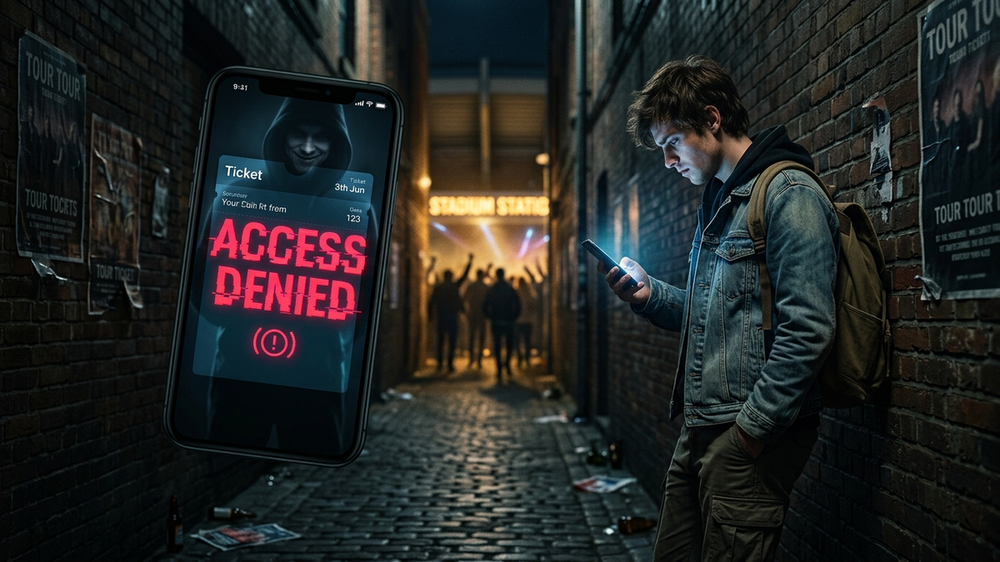

Alright, let's have a real talk. For 15 years, I've been in the digital trenches, pulling apart networks, hunting down threats, and locking down systems for a living. I've seen how the sausage gets made when it comes to online fraud, and the concert ticket market is a five-star feast for scammers. They’re not just kids in a basement; they’re organized, sophisticated, and they are experts at manipulating your excitement and desperation.
You work hard for your money. The idea of spending hundreds, maybe thousands, on seeing your favorite artist, only to be left standing outside the venue with a fake QR code and a drained bank account is infuriating. This isn't just about losing money; it's about the violation, the crushed excitement, and the feeling of being played. This guide is your new playbook. I’m not going to give you vague advice. I’m going to give you the technical and psychological toolkit you need to navigate this minefield and walk through those gates, every single time.
First, you need to understand the enemy and their weapons. Ticket scams aren't just one single trick; they're a multi-pronged attack designed to exploit specific weaknesses in how we buy things online. The most common scam is the simple phantom ticket. A scammer posts an ad on Facebook Marketplace or Craigslist for tickets they don't have. They use stolen pictures or mockups, get you to send them money via Zelle or Venmo, and then they ghost you. Your money is gone, and there was never a ticket to begin with. It’s the digital equivalent of a street corner three-card monte game.
Then you have the more sophisticated attacks. Phishing websites are a huge problem. Scammers create perfect clones of Ticketmaster or even a specific venue’s website. The URL will be almost identical, maybe "Ticketrnaster.com" or "TheForum-Tickets.com." They buy ads on Google and social media so their fake site shows up first. You log in, enter your credit card info, and you've just handed them the keys to your financial kingdom. They not only take your money for the fake ticket but might also use your credentials to take over your real account or sell your credit card details on the dark web. It’s a double-hit.
Finally, there's the scourge of counterfeit tickets. With modern printers and software, creating a PDF ticket that looks 100% legitimate is trivial. Scammers will sell the same PDF file to ten different people. The first person who gets to the venue gets their ticket scanned, and it works. The other nine people show up later and are told their ticket has already been used. At that point, the seller's profile has vanished, and you're left arguing with a gate attendant who has seen this exact scenario play out a hundred times that night. They also love the "screenshot scam," where they send you a picture of a mobile ticket, but it's just a static image. The real mobile tickets have animated elements or a barcode that refreshes every few seconds to prevent exactly this kind of fraud. A screenshot will never get you in.
The absolute, gold-standard, number one way to not get scammed is to buy from the primary source. This means going directly to the official seller the moment tickets go on sale. This is almost always Ticketmaster, AXS, or sometimes a smaller, in-house platform run by the venue itself (like SeeTickets). When you buy from them, you are the first and only owner of that ticket. There is a direct, unbroken chain of custody from the artist's management to you. Yes, it's a nightmare with queues, bots, and dynamic pricing that makes your wallet cry, but the ticket you get is guaranteed to be real.
But what if the show is sold out? You're forced into the secondary market. This is where things get dangerous, but you can dramatically reduce your risk by sticking to reputable, verified resale marketplaces. Think of sites like StubHub, SeatGeek, and Vivid Seats. These are not the Wild West of Craigslist. They are middlemen, and you are paying them a hefty fee for the service of being that middleman. Here's what that fee gets you: seller verification, a secure payment platform, and, most importantly, a buyer's guarantee. StubHub's "FanProtect Guarantee," for example, promises that if your ticket is invalid, they will find you a comparable or better replacement ticket or give you a full refund. They are financially incentivized to police their own platform because a bad reputation kills their business.
The key distinction to understand is the difference between a "marketplace" and a "classifieds" site. A marketplace like SeatGeek integrates with the primary ticket issuers. They can often verify in real-time that the barcode being listed is legitimate. They hold the seller's money in escrow and don't release it until after the event has successfully happened, which discourages fraud. A classifieds site like Facebook Marketplace or a subreddit is just a digital bulletin board. It connects you with a stranger and then steps away, offering zero protection, zero verification, and zero recourse. You are completely on your own, and that's exactly where scammers want you to be.
💡 Expert IT Tip: Before you ever click a link to a ticket site from an email or social media ad, manually type the URL into your browser. Scammers are masters of typosquatting, where they register domains that are one letter off from the real thing (e.g., StubHubb.com). For an extra layer of security, use a URL scanner like VirusTotal. You can paste any suspicious link into it, and it will analyze the site against dozens of security databases to see if it's a known phishing or malware host. It's like having a bomb-sniffing dog for the internet.
Once you venture outside the walled gardens of official sellers, you need to become a human lie detector. Scammers follow a script, and if you know what to look for, their tactics become glaringly obvious. The biggest red flag of all is the payment method. If a seller insists—or even nudges you—to use a non-reversible payment method, the conversation is over. This includes Zelle, Venmo (using the "Friends & Family" option), Cash App, Apple Pay, wire transfers, or gift cards. These are the digital equivalent of handing someone a wad of cash and watching them run. There is no fraud protection, no buyer insurance, and no way to get it back. They will have excuses: "I don't want to pay the fees," or "PayPal put a hold on my account." These are lies designed to get you to lower your guard. A legitimate seller will always accept a protected method like PayPal Goods & Services.
Next, watch out for unrealistic prices and high-pressure tactics. Is someone selling a front-row seat to the most in-demand tour of the year for face value? It's a scam. Scammers know that the allure of a "great deal" can override common sense. They combine this with manufactured urgency. You'll see phrases like, "I have three other people asking about these, you need to decide now!" or "The price goes up in an hour." This is a classic social engineering trick designed to short-circuit your critical thinking. They want you to act on emotion (FOMO) before your logic kicks in and starts asking questions.
Protect your identity and browse privately with Surfshark One - the all-in-one security suite.
GET 60% OFF SURFSHARK NOWPay close attention to the details of the listing and the seller's profile. A real seller can tell you the exact section, row, and seat numbers. A scammer will be vague: "Great lower-bowl seats!" or "Section 102, I'll send the seat numbers after you pay." That's a huge warning sign. Investigate their social media profile. Was it created last week? Does it have only a handful of friends and no real posts or interactions? Scammers use burner profiles that they can discard after they've ripped people off. Also, look for poor grammar and spelling in their messages. While not a definitive indicator on its own, it's often a sign of a scammer operating from overseas, running a copy-paste script across hundreds of potential victims.
Let's talk about the moment of truth: the payment. This is the single most critical point where you either protect yourself or lose your money. Your non-negotiable, undisputed champion in this fight is the credit card. Not a debit card, a credit card. In the US, the Fair Credit Billing Act (FCBA) is your legal armor. It gives you the right to dispute charges for goods or services you didn't receive or that weren't as described. This process, called a chargeback, is a powerful tool. When you file a chargeback, the credit card company yanks the money back from the merchant's account while they investigate. The burden of proof is on the seller to prove they delivered the legitimate item, which a scammer can't do.
If you're dealing with an individual seller on a platform that isn't a major marketplace, your next best option is PayPal Goods & Services. Scammers will almost always try to convince you to use PayPal "Friends & Family." They'll say it's to avoid the seller fee. What they're really avoiding is PayPal's Buyer Protection program. When you pay using Goods & Services, you pay a small fee (around 3%), but that fee is your insurance policy. It signals to PayPal that this is a commercial transaction. If the seller doesn't deliver the tickets, you can file a dispute directly with PayPal, and they will investigate and refund your money if your claim is valid. If a seller refuses to use Goods & Services, walk away. Period. There is no legitimate reason for their refusal.
To be crystal clear, there is a list of payment methods you should never, ever use for a transaction like this with a stranger. This list includes Zelle, Venmo, Cash App, cryptocurrency, and bank wire transfers. These services are designed for one thing: sending money to people you know and trust. They function like digital cash. Once you hit "send," the money is gone forever. Their terms of service explicitly state they are not to be used for commercial transactions with unknown parties, and they will offer you absolutely no help if you get scammed. A scammer asking for payment via one of these methods is like a burglar asking you to please leave your front door unlocked. They are telling you, point-blank, that they intend to rob you.
💡 Expert IT Tip: Use a virtual credit card for all online ticket purchases. Services like Privacy.com, or features built into cards from Capital One (Eno) and Citi, allow you to generate a unique, "burner" card number for a single transaction. You can set a spending limit on it (the exact price of the tickets) and then "lock" or delete the card after the purchase. If the ticket website you're buying from gets breached later, your real credit card number isn't exposed. It's like wearing a disposable glove for a dirty job—it protects your real hand from getting messy.
You clicked "buy," and the money has left your account. You're not done yet. The moments after the transaction are critical for confirming you got what you paid for. The goal is to get the tickets officially and formally transferred into your name and your account as quickly as possible. Do not accept a PDF emailed to you. Do not accept a screenshot of a QR code. These are easily faked and duplicated. Legitimate mobile tickets must be transferred using the official app, such as the Ticketmaster app's transfer feature. This process removes the ticket from the seller's account and places it directly into yours. It is now your ticket, and only your ticket. The barcode is now tied to your identity.
Be aware of the ticket release delay. To combat scalping bots and fraud, many artists and venues now implement a delivery delay. This means that even though you've bought the ticket and it appears as a placeholder in your Ticketmaster account, the actual barcode you need for entry won't be revealed until 24-48 hours before the show. This is a normal and legitimate security measure. The key is that you should still be able to see the ticket (with the barcode grayed out) in your official account. If the seller says, "I'll send you the PDF the day before the show," that is a massive red flag. The transfer should happen into your account immediately, even if the barcode itself is delayed.
But what if the worst happens? You realize you've been scammed. The key is to act fast—speed is your only advantage.
Look, buying tickets online doesn't have to be terrifying. It just requires a shift in mindset. You have to stop thinking like an excited fan and start thinking like a security professional. That means being skeptical by default. It means trusting verifiable processes, not persuasive strangers. It means understanding that a "deal" that saves you $50 isn't a deal if it costs you the $500 you sent for a ticket that never existed.
The fundamentals are simple and they never change. Stick to official, reputable vendors whenever possible. Use a credit card as your non-negotiable shield for every single transaction. Learn to spot the red flags of pressure, unusual payment requests, and unbelievable prices. If you treat every ticket purchase with a healthy dose of paranoia and follow the protocols we've laid out here, you'll shut down 99% of scammers before they can even get started. Now go enjoy the show. You've earned it.
Don't wait for the headlines. Our Private Telegram Channel delivers real-time AI security updates and digital wealth strategies before they go viral. Stay protected. Stay ahead.
⚡ JOIN THE 1% NOWNo sign-up required. Instantly check risks, analyze AI text, or calculate your digital finances.